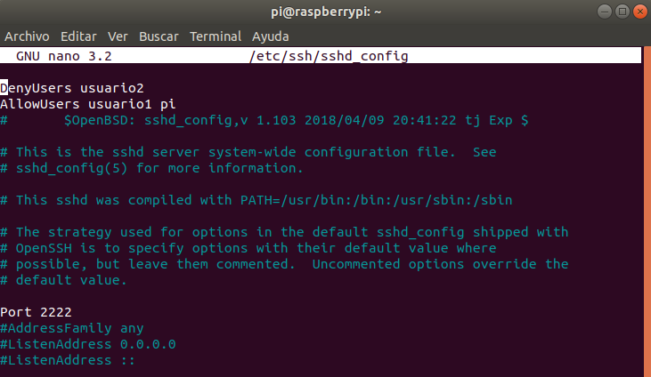

Ejercicio 2: SSH
1. Instala un servidor SSH en tu sistema GNU/Linux y comprueba que el puerto
22 esta en escucha
2. Crea dos usuarios denominados usuario1 y usuario2, que vas a usarlos en
el ejercicio
3. Comprueba que puedes acceder mediante ssh a esos usuarios
4. Cambia el puerto del servidor e intenta a acceder de nuevo
5. Cambia la configuración del servidor para que puedas acceder al sistema
con usuario1 y NO con usuario2

6. Cambia la configuración del servidor para que solo pueda acceder desde
una IP determinada
7. Captura con wireshark una conexión ssh, comprueba que login y contraseña
van encriptada. Analiza cada una de las capas TCP/IP implicadas indicando los
datos mas relevantes,además del tamaño de cada capa, separando datos y cabecera
Capa de acceso a la red (Física): 526 bytes
Capa de acceso a la red (Enlace de datos): Ethernet II
Capa de internet: IPV4
Capa de transporte: TCP